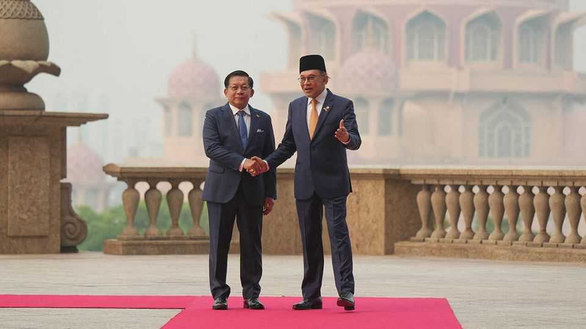

Myanmar’s dictator tries diplomacy
He has a few cards to play

Oct 15th 2026
MIN AUNG HLAING is keen to get into the world’s good books. The dictator, who seized power in Myanmar in 2021, underwent a makeover earlier this year. He quit the army and made himself president following a rigged election. Now he has gone on a diplomatic blitz within Asia and is talking to America. Calls to end military atrocities have gone unheeded; but the despot has some cards to play.
One is taking back those who have fled Myanmar’s war and economic collapse. This won Mr Min Aung Hlaing a visit on October 7th-8th to Malaysia, formerly his biggest critic in the region. Anwar Ibrahim, Malaysia’s prime minister, received him in return for a deal on repatriating thousands of Myanmar nationals, a bid to fend off local anger about the migrants.
Mr Anwar pleaded pragmatism, but the dictator’s red-carpet welcome was a step towards his rehabilitation among leaders of the Association of South-East Asian Nations (ASEAN). The Malaysia visit followed ones in the past four months to Cambodia, Laos, Thailand and Vietnam.
Other cards include fighting online scams and selling rare earths. These have helped lure America into talks with the regime. Michael Vance, the State Department’s intelligence chief, met Mr Min Aung Hlaing in September. Mr Vance’s visit was ostensibly to secure the release from prison of Adam Castillo, a businessman. But the budding dialogue is focused on scam centres and extracting minerals.
A rapprochement would be key to lessening Myanmar’s reliance on China, which has propped up the regime amid its heavy losses to rebels. That help has come with high-handed orders to close scam centres targeting Chinese citizens. It is unlikely that America will have any more luck than China in getting them closed. Scam profits have allowed the centres to buy off regime officials, allegedly including the former head of its anti-scams committee.
Myanmar’s rare-earth deposits, meanwhile, are largely beyond the regime’s reach, in areas controlled by ethnic armed groups, and are locked into Chinese supply chains. American officials may simply be using the minerals to get noticed by Donald Trump. “Everyone knows the White House and president are fixated on rare earths,” says a former Washington-based official with Myanmar experience. “That’s what everyone, including me, would throw out in meetings to get attention.”
Mr Min Aung Hlaing is also holding his strongest card in reserve. The trading of Mr Castillo shows an appetite for hostage diplomacy—and there is one prisoner who far outranks the rest. Aung San Suu Kyi, who led Myanmar between 2016 and 2021, has been detained since the coup. If freed, odds are that she would be barred from politics. But her release might provide the symbolic win that ASEAN and others need to wash their hands of Myanmar’s atrocious human-rights record and get back to business as usual. ■
For exclusive coverage of Asian politics, economics and security, sign up to Asia Bulletin, our weekly subscriber-only newsletter.